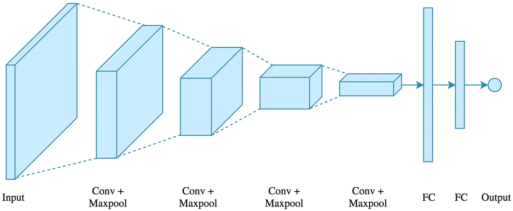
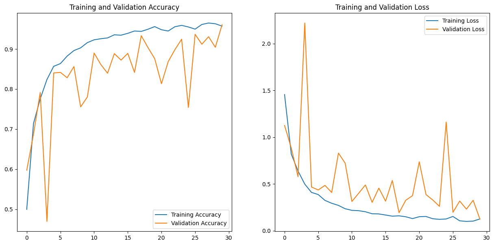

Tomato leaf diseases pose a significant threat to crop yields and farmer livelihoods. Traditional methods of disease detection are often time-consuming, inaccurate, and rely on visual inspection, which can be subjective and prone to error. Artificial intelligence offers a powerful solution by automating the process and providing early, accurate diagnoses.
At the heart of TomatoAidX is our cutting-edge Convolutional Neural Network (CNN) model. CNNs are a type of deep learning algorithm that excels at image analysis. Our CNN has been trained on a vast dataset of tomato leaf images to recognize patterns and features associated with various diseases, enabling it to accurately identify and classify different types of infections.

Training Accuracy : 96.04%
Test Accuracy : 96.01%
